Где сейчас находятся реальные деньги
Investment Landscape 2025–2026
Eugene Kitkin
WowSuch.com · Starskold Mining
3 марта 2026 · Venture MBA Club
Это величайший прорыв в истории технологий — или величайший пузырь?
Годовые инвестиции Big Tech в AI-инфраструктуру (CapEx), млрд $
Microsoft один тратит $140 млрд — больше, чем ВВП Норвегии.
Источники: отчёты Big Tech (CapEx), прогнозы аналитиков 2025–2026
Инвестируйте в энергию и чипы. Всё остальное — производные.
Распределение глобального хешрейта (после запрета в Китае)
% от глобального хешрейта (масштаб одинаковый)
Cambridge Centre for Alternative Finance, отраслевые отчёты 2024–2025
Китай → мир: как менялся хешрейт за 5 лет
Сентябрь 2022: Proof-of-Work → Proof-of-Stake
Почему Ethereum перешёл на PoS
Итог: рынок GPU-майнинга на $15 млрд стал бесполезен за ночь. Выиграли: Bitcoin ASIC-майнеры, AI-компании (скупили GPU). Проиграли: GPU-майнеры.
Почему серьёзные деньги только в Bitcoin?
ethereum.org, Cambridge CCFF, ViaBTC, CoinShares, отраслевая аналитика
Эффективность (Дж/ТХ) за 5 лет
| Год | Модель | Хешрейт | Мощность | Эффективность |
|---|---|---|---|---|
| 2020 | S19 Pro | 110 TH/s | 3250 W | 29.5 J/TH |
| 2023 | S19 XP | 140 TH/s | 3010 W | 21.5 J/TH (−30%) |
| 2025 | S21 Pro | 234 TH/s | 3510 W | 15 J/TH (−40%) |
| 2025 | S21 XP Hydro | 500 TH/s | 5500 W | 11 J/TH |
За 5 лет эффективность выросла примерно в 2.5 раза. Цикл обновления — 18–24 месяца.
Аппарат с 29.5 J/TH (S19 Pro) при хешрейте 110 TH/s потребляет ~3250 Вт — то есть ~78 кВт·ч в день. При тарифе $0.05/кВт·ч это ~$3.90/день только электричество. А доход с 110 TH при текущем hashprice (~$0.03/TH/день) — всего ~$3.30/день. Уже убыток, и это без учёта аренды места в дата-центре.
Для сравнения: S21 Pro (15 J/TH) при 234 TH/s потребляет ~3510 Вт (~84 кВт·ч/день), стоимость электричества ~$4.20/день. Доход — ~$7.00/день. Маржа +$2.80/день.
Вывод: при одинаковом тарифе старый аппарат уходит в минус, а новый — в плюс. Порог — примерно 20 J/TH: выше — работаешь в убыток при любом разумном тарифе (кроме практически бесплатного электричества).
Дж/ТХ (джоуль на терахеш) — сколько энергии устройство тратит на одну единицу «работы». Джоуль — крошечная порция электричества; киловатт-час в вашем счёте — это миллионы джоулей. Чем меньше Дж/ТХ — тем дешевле «добывать».
Пример: два аппарата с одинаковым хешрейтом, но 15 и 30 Дж/ТХ. Второй съедает в 2 раза больше киловатт-часов и денег.
Почему Дж/ТХ, а не «киловатт на терахеш»? Киловатт — мощность (энергия в секунду). Дж/ТХ — энергия на единицу работы. По сути одно и то же, просто в джоулях числа удобнее (меньше нулей). Индустрия договорилась на Дж/ТХ — один показатель, по нему сразу видно, «жадная» установка или нет.
Почему это ключевое: электричество — главная постоянная затрата. Железо покупаешь один раз, а за свет платишь каждый месяц. Чем ниже Дж/ТХ, тем ты в плюсе при более дорогом тарифе.
Bitmain, публичные спецификации и обзоры
Полная стоимость в дата-центре под ключ (электричество + обслуживание, охлаждение, инфраструктура), S21 Pro
Цены — ориентир по хостингу/колокации майнинга (all-in $/кВт·ч). Маржа условная при текущем BTC и сложности.
Почему sweet spot — около 5 центов?
При текущем BTC (~$66–100K), сложности ~144T и хешрейте ~1060 EH/s доход с 1 TH в день (hashprice) — около $0.029–0.05/TH/день. Оборудование 15 Дж/ТХ тратит ~0,36 кВт·ч на 1 TH в день. Только на электричестве безубыток при тарифе ~$0.08/кВт·ч. Полная стоимость в дата-центре (ток + обслуживание + охлаждение) в зоне $0.05–0.07/кВт·ч даёт устойчивую маржу; выше $0.10/кВт·ч маржа быстро исчезает.
* Россия — хорошая экономика по цифрам, но геополитический риск. Sweet spot: $0.05–0.10/кВт·ч полной стоимости.
Hashrate Index (hashprice, difficulty), QuoteColo, CryptoHall24, Miners1688, ViaBTC, отраслевые каталоги хостинга 2025
Где майнинг приветствуют, где запрещают
Зелёные (pro-mining): США (указы Трампа 2026 — дата-центры и своя энергия), Канада, Оман, ОАЭ, Эфиопия.
Жёлтые: Россия (10 регионов под запретом до 2031), Казахстан (тренд негативный), ЮАР (энергокризис).
Красные: Китай (полный запрет с 2021), Алжир, ЕС (MiCA, климат — майнинг мигрирует).
Локальное законодательство, MiCA, отраслевые обзоры
Что нужно и чего избегать
✅ Нужно
❌ Избегать
Майнинг — commodity-бизнес: все майнят один и тот же Bitcoin, продают по одной цене. Единственное, на чём ты конкурируешь, — себестоимость.
Пример: S21 Pro (15 J/TH) при BTC $65K и тарифе $0.07 — прибыль ~$0.95/день. Если эффективность ухудшится всего на 1 J/TH (до 16 J/TH), потребление вырастет на ~6%, и прибыль падает до ~$0.45 — почти в два раза. А при 17 J/TH — уже около нуля.
В масштабе фермы на 1000 устройств: 1 J/TH разницы = $500/день = $180K/год. На тонкой марже это разница между прибылью и банкротством.
Потребление энергии дата-центрами AI (ГВт)
156 ГВт ≈ 100 атомных станций или весь энергобаланс Германии.
McKinsey: $5.2 трлн капитальных вложений до 2030 для такой инфраструктуры.
McKinsey Global Institute, отраслевые отчёты по дата-центрам
Пока — Big Tech. В 2025 году они вложили $407 млрд. Но это лишь 8% от необходимых $5.2 трлн за 6 лет.
CapEx в AI-инфраструктуру, 2025 год
Итого 2025: ~$407 млрд. Прогноз 2026: $660–690 млрд. Темп растёт, но до ~$870 млрд/год (чтобы набрать $5.2 трлн к 2030) ещё далеко.
Отчёты компаний (CapEx), earnings calls
Окупается ли текущий CapEx?
Дата-центры, введённые в 2025:
Амортизация в год: $40 млрд
Выручка от них: $15–20 млрд
Разрыв: −$20–25 млрд. Затраты в ~2.5 раза выше выручки.
Goldman Sachs Research, публичные высказывания CEO
Рост потребления мощности на один GPU (Вт)
В ~6 раз больше, чем A100 пять лет назад. Один rack: 2020 — 10 кВт, 2025 — 100–200 кВт.
Backlog на подключение к сети в США — 5–10 лет.
NVIDIA, SemiAnalysis
Производство электричества: США vs Китай (ТВт·ч)
| 2023 | 2026 (прогноз) | Рост | |
|---|---|---|---|
| США | 4 000 TWh | 4 200 TWh | +5% |
| Китай | 8 000 TWh | 12 600 TWh | +57% |
К 2026 Китай будет производить электричества в 3 раза больше, чем США.
IEA, национальная статистика энергетики
США
Backlog на подключение 5–10 лет
Дефицит воды (AZ, NV)
Техас — лидер, дерегулированная сеть
Европа
Энергия в 3× дороже США
Климатические ограничения
Китай
Государство: быстрый деплой мощностей
3× энергия к США
Ближний Восток
Дефицит воды для охлаждения
Дешёвая энергия (нефть, газ)
Индия, Африка
Недостаточная базовая нагрузка
Нестабильность сети
Физических мест для дата-центров на Земле ограничено. Отсюда идея космоса.
4 направления, ни одно пока не решает проблему полностью
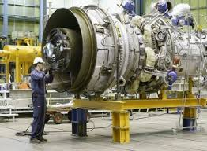
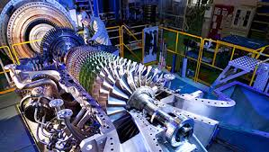
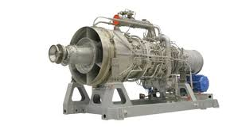
Своя генерация
Газовые турбины при дата-центрах. Мандат Трампа (фев 2026).
Статус: экспериментально
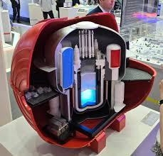
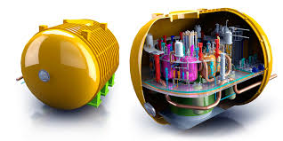
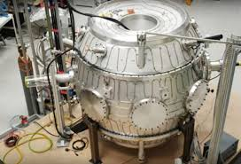
SMR (мини-реакторы)
NuScale (77 МВт), Oklo, TerraPower. Компактные ядерные реакторы.
Деплой: 2027–2030
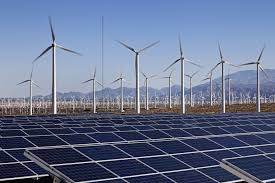
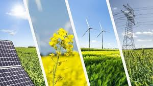
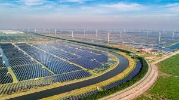
ВИЭ + батареи
Солнце, ветер + хранилища энергии (литий, LFP). NextEra, Brookfield.
Проблема: прерывистость
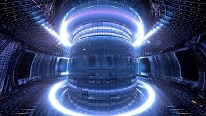
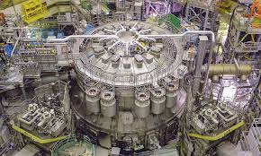
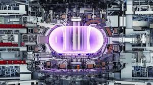
Термоядерный синтез
CFS (SPARC), TAE Technologies. Партнёрство с NVIDIA.
Горизонт: 2030-е
Реальность 2025: ~60% новых дата-центров работают на ископаемом топливе (газ). ESG vs спрос на AI — конфликт.
25 февраля 2026 Трамп объявил «Rate Payer Protection Pledge»: Big Tech обязаны строить собственные электростанции при дата-центрах, чтобы не перекладывать нагрузку на потребительскую электросеть и не поднимать тарифы для населения.
Amazon, Google, Meta, Microsoft, xAI, Oracle, OpenAI приглашены на встречу в Белый дом в марте 2026 для формализации обязательств. Детали реализации пока не раскрыты — компании уже начали строить off-grid генерацию добровольно.
Источники: Reuters, Business Insider, The Verge (февраль 2026)
SMR — компактные ядерные реакторы мощностью 50–300 МВт (обычная АЭС — 1000+ МВт). Можно размещать рядом с дата-центром, подключать модульно: нужно больше мощности — ставишь ещё один модуль.
NuScale — единственный SMR с одобрением NRC (регулятор США). Два дизайна: 50 МВт и 77 МВт на модуль. Станция из 12 модулей = ~924 МВт — хватит на крупный дата-центр. Деплой: ожидается к 2030.
Oklo — микрореактор 15 МВт, работает на переработанном топливе. Контракт с ВВС США. TerraPower (Билл Гейтс) — натриевый реактор 345 МВт, строительство в Вайоминге.
Хватит ли? Один SMR (77 МВт) покрывает ~1/3 типичного гипермасштабного дата-центра. Нужно 3–4 модуля на один кампус. По масштабу — это решение, но регуляция и сроки строительства пока тормозят.
Источники: NuScale Power, NRC, отраслевые отчёты
Commonwealth Fusion Systems (CFS) — лидер частного термояда. Базируется в Массачусетсе (не Калифорния). Привлекли ~$3 млрд — треть всех мировых инвестиций в частный термояд. В январе 2026 установили первый 24-тонный сверхпроводящий магнит для реактора SPARC. Все 18 магнитов — до лета 2026.
Партнёрство с NVIDIA (цифровой двойник реактора) и Siemens. Eni (Италия) подписал PPA на $1 млрд+ для покупки энергии с будущей коммерческой станции ARC (Вирджиния, начало 2030-х).
TAE Technologies (Калифорния) — другой подход к термояду (FRC). Привлекли $1.2 млрд. Коммерческий реактор — ориентир конец 2020-х/2030-е.
Если термояд заработает — неограниченная чистая энергия. Но «10 лет до коммерции» говорят уже 30 лет. Для AI-инфраструктуры прямо сейчас — не решение, но в горизонте 2030-х возможный game-changer.
Источники: CFS, TechCrunch (янв 2026), TAE Technologies
Reuters, Business Insider, NuScale Power, CFS, отраслевые отчёты
Какие бы AI-решения ни победили, все они потребляют электричество. Энергосектор выигрывает в любом сценарии.
🏢 Utilities (электросети)
Крупные регулируемые электрокомпании — поставляют электричество миллионам потребителей и дата-центрам. Стабильный бизнес, дивиденды.
Duke Energy (DUK)
Cap ~$90 млрд. 8.4 млн клиентов, 54.8 ГВт мощности. Дивидендная доходность ~3.5%, 99 лет подряд. Рост акций +34% за 3 года.
Dominion Energy (D)
Cap ~$47 млрд. 7 млн клиентов (Вирджиния, Каролина). Дивидендная доходность ~4.5%. Крупнейший заказчик SMR у NuScale.
Риск: низкий. Регулируемые монополии.
☀️ Возобновляемая энергия
Солнечные и ветряные парки + батареи для хранения. Строят генерацию, которую покупают дата-центры.
NextEra Energy (NEE)
Cap ~$178 млрд, крупнейший в мире генератор ВИЭ. Бэклог 30 ГВт проектов. Рост EPS ~8%/год. +7.2 ГВт введено в 2025.
Brookfield Renewable (BEP)
Cap ~$25 млрд. Гидро, ветер, солнце на 5 континентах. Дивидендная доходность ~4%.
Риск: средний. Зависит от политики и субсидий.
⚛️ Ядерные инновации (SMR)
Компактные реакторы нового поколения. Пока на стадии разработки / первых заказов.
NuScale (SMR)
Публичная (NYSE). Единственный SMR с одобрением NRC. 77 МВт/модуль. Деплой к 2030.
Oklo (OKLO)
Публичная (NYSE). Микрореактор 15 МВт. Контракт с ВВС США. Сэм Альтман — председатель совета директоров.
TerraPower
Частная (Билл Гейтс). Натриевый реактор 345 МВт. Строительство в Вайоминге.
Риск: высокий. Технология не проверена в масштабе.
Ключевое наблюдение: энергосектор растёт независимо от того, лопнет AI-пузырь или нет — электричество потребляется в любом случае.
Duke Energy IR, NextEra Energy IR, NuScale Power, Oklo, MacroTrends, MarketBeat
На Земле заканчиваются места с дешёвым электричеством и охлаждением. Идея: вынести серверы в космос, где солнце светит 24/7 и не нужна вода.
SpaceX подала заявку в FCC (американский регулятор связи) на запуск сети из миллиона спутников с AI-серверами на борту — по сути, дата-центр, разбросанный по орбите.
Другие игроки: Axiom Space (тесты на МКС), Lonestar Data (хранилище данных на Луне), AWS (эксперименты на МКС в 2022).
FCC filings, пресс-релизы SpaceX, TechCrunch
Почему орбита выглядит привлекательно
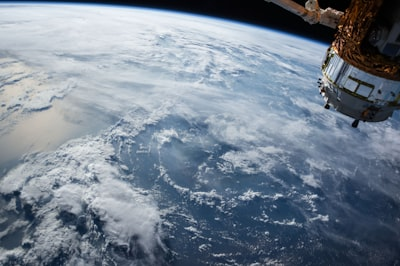
☀️ Бесконечная энергия
Солнце 24/7, нет ночи и облаков. В 10 раз эффективнее, чем на Земле.
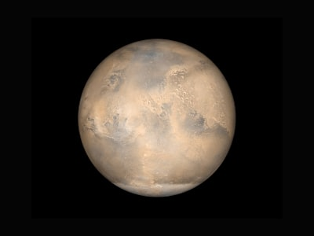
❄️ Нет затрат на охлаждение
В вакууме тепло излучается напрямую. Вода не нужна.
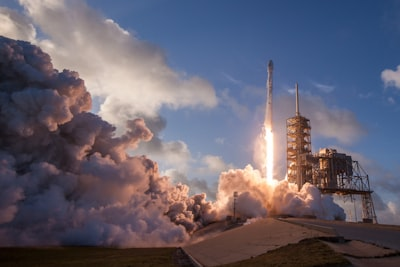
🌍 Нет ограничений по земле
Бесконечное пространство. Никто не жалуется на шум и стройку.
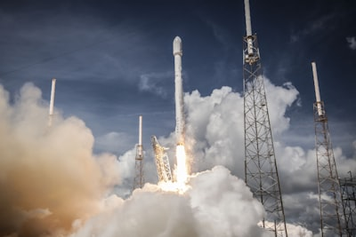
🛡 Физическая безопасность
Изолировано от земных угроз. Взлом — только через канал связи.
Звучит как утопия. Но есть нюансы — на следующих слайдах.
Построить дата-центр в космосе — в 3 раза дороже, чем на Земле
Сравнение: дата-центр одинаковой мощности (1 ГВт ≈ крупная АЭС)
| Статья расходов | На Земле | На орбите |
|---|---|---|
| Доставка / строительство | включено | $5–10 млрд |
| Оборудование (серверы, сети) | $10 млрд | $15 млрд |
| Монтаж и сборка | $3 млрд | $10 млрд |
| Страхование | $0.5 млрд | $5 млрд |
| Операции (10 лет) | $1.5 млрд | $7.4 млрд |
| Итого | ~$15 млрд | ~$42.4 млрд |
Главная проблема — доставка на орбиту. Сейчас ракета Starship (SpaceX) может поднять ~100 тонн за один запуск стоимостью ~$10 млн. Но дата-центр на 1 ГВт — это тысячи тонн оборудования и сотни запусков. Пока это слишком дорого. Чтобы космические дата-центры стали выгоднее земных, стоимость запуска должна упасть примерно в 10 раз.
TechCrunch (февраль 2026), отраслевые оценки орбитальной инфраструктуры
Пять главных проблем простыми словами
⏱
Задержка
Спутник далеко. Сигнал туда-обратно — полсекунды. Для чата и голоса слишком долго.
🔧
Не починить
В космос не пошлёшь техника. Радиация быстрее убивает железо. Живёт 5–7 лет вместо 10–15.
📡
Мало канала
С орбиты на Землю можно передать куда меньше данных, чем по кабелю.
💥
Мусор и столкновения
Миллион спутников — кто-то во что-то врежется. Один взрыв может запустить цепную реакцию.
🌡
Охлаждение
В вакууме нет воздуха — тепло не отвести как на Земле. Нужны огромные радиаторы.
TechCrunch, экспертные интервью
📅
Сроки
2026–2028 — только эксперименты.
2029–2032 — первые маленькие установки.
После 2035 — может стать выгодно, если запуск в космос подешевеет в 10 раз.
💡
Куда смотреть
❌ Стартапы «дата-центр в космосе» — пока рано, много денег сгорает.
✅ Косвенно: доли в SpaceX, Rocket Lab, Planet, Maxar — они строят инфраструктуру.
⚠️ Только для тех, кто готов ждать 10+ лет и рисковать.
⚡ Главный риск: если на Земле решат проблему энергии (термояд, мини-АЭС), космические дата-центры могут никому не понадобиться — пока их построят.
Дотком 2000 vs AI бум 2025
| Дотком (2000) | AI бум (2025) | |
|---|---|---|
| P/E лидеров | ~30x | 38x (Magnificent Seven) |
| CapEx/год | порядок $100–200B за 4 года | $400B в год |
| Размер пузыря (оценка) | ~$5 трлн | ~$85 трлн (MacroStrategy, в 17 раз больше) |
MacroStrategy Partnership, исторические данные NASDAQ, отчёты по мультипликаторам
Аргументы скептиков
📊
Дорого
P/E 38x — выше, чем в доткоме (30x). Выручка 10–15x — исторически не держится.
💰
Разрыв
$40 млрд износ оборудования против $15–20 млрд выручки — прибыль не сходится.
📈
GDP
Goldman (Хациус): «Почти 0% роста ВВП США в 2025 можно отнести к AI».
🎯
Зрелость
McKinsey: 78% «используют AI», но только 1% по-настоящему зарабатывают на нём.
📉
Долг
К 2028 — около $1.5 трлн совокупного долга по AI-инфраструктуре.
🎤
Инсайдеры
Альтман, Безос, Соломон — открыто говорят про переинвестирование.
Goldman Sachs Research, McKinsey, публичные высказывания CEO
Аргументы оптимистов
🏢
Внедрение
78% компаний уже используют AI (в 1999 интернет — 20–30%). Copilot — $10 млрд за 18 месяцев.
✅
Прибыль
Big Tech зарабатывают на AI. В доткоме были убытки. NVIDIA — маржа около 50%.
🏗
Активы
Дата-центры — реальные объекты. После краха доткомов сайты не стоили ничего; серверы — стоят.
📈
Рост
Выручка +40–60% в год — высоко, но достижимо. В доткоме обещали 100–200% и не вытянули.
BlackRock, Goldman Sachs Research (октябрь 2025: «Почему мы ещё не в пузыре... пока»)
| Метрика | Дотком | AI бум |
|---|---|---|
| P/E | 30x | 38x |
| Рост выручки | 100–200% | 40–60% |
| Прибыльность | Убытки | Profitable |
| Adoption | 20–30% | 78% |
| Зрелость | ~5% | 1% AI-mature |
| CapEx | $100–200B (4 года) | $400B (1 год) |
| Инфраструктура | Obsolete после краха | Сохраняет ценность |
| Размер пузыря | $5T | $85T (17x) |
Больше сходств, чем различий. Риск реален.
Сценарий 2027–2028
⚡
Что может лопнуть
Медленные деньги с AI, дорогие кредиты, энергокризис.
💥
Как выглядит крах
Падение AI-акций на 50–70%, банкротства дата-центров, венчурные деньги перестают течь.
✅ Выживут
Энергетика, производители чипов, Big Tech (крепкие балансы).
❌ Пострадают сильнее
Поздние AI-стартапы (Series D+), облака на GPU (CoreWeave и др.), REIT дата-центров.
💡 Идея: держать 10–20% «сухих» денег на 2027–2028 — в панике можно будет дёшево купить активы.
Поздние AI-стартапы (Series D+) — оценки $5–10 млрд при минимальной выручке. Когда рынок разворачивается, новых раундов нет, а расходы огромные. В доткоме так погибли Webvan, Pets.com и сотни других: деньги кончились раньше, чем появилась прибыль.
Облака на GPU (CoreWeave и др.) — бизнес построен на аренде GPU, купленных в долг. Если спрос на AI-вычисления упадёт, клиенты уйдут, а кредиты останутся. Долг CoreWeave — миллиарды, а контракты краткосрочные.
REIT дата-центров — фонды, которые строят дата-центры под AI-спрос. Если спрос сожмётся, новые здания останутся пустыми, а ипотека никуда не денется. Высокий долг + падение арендных ставок = двойной удар.
Общая причина: все три сектора сильно закредитованы и зависят от роста AI-спроса. Если рост остановится — у них нет «подушки» прибыли, как у Big Tech или производителей чипов.
Реальное экономическое влияние
| Задача | До AI | После AI | Изменение |
|---|---|---|---|
| Content creation | $5,000 | $500 | −90% |
| Code development | $10,000 | $2,000 | −80% |
| Market research | $20,000 | $2,000 | −90% |
| Customer support (год) | $50,000 | $10,000 | −80% |
Выигрывают: стартапы, агентства с пивотом в AI. Проигрывают: джуниор-роли, legacy-агентства.
Goldman Sachs: ~300 млн рабочих мест под угрозой к 2035 глобально.
Данных создаётся больше, чем успевают наращивать хранилища
📊 Разрыв растёт каждый год
Ёмкость хранилищ
+20–30% в год
Создание данных
+50–60% в год
Разрыв 20–30% в год
🤖
AI-модели
Терабайты на одну модель. Чекпоинты обучения съедают память.
🎬
Видео (Sora и др.)
Петабайты в день. Генерация видео — главный потребитель.
🚗
Автономные авто
Около 4 ТБ данных в день на одну машину.
📉
Сжатие (AI codecs)
Уже внедряют. Быстрый эффект.
📁
Уровни хранения
Горячее / холодное. Средний срок.
🧬
ДНК-хранилища
Горизонт ~10 лет. Catalog, Twist Bioscience.
Кто в теме сейчас: Micron, Samsung — производители памяти. Спекулятивно: Catalog, Twist Bioscience (ДНК).
Отраслевые отчёты по storage, полупроводникам
⚡
Энергия контролирует AI
🔀
Монополия NVIDIA хрупка ⓘ
🫧
AI-пузырь вероятен
🛰
Space DC — спекуляция на 10 лет
₿
Майнинг = только Bitcoin
🤖
AI-агенты — не хайп
🏢
Big Tech — самые устойчивые
🌱
Ранние стартапы > поздние
💰
Коррекция 2027–2028 — держать кеш
🇨🇳
Китай недооценён (3× энергия)
Инвестируйте не в мечту об AI. Инвестируйте в инфраструктуру, которая делает AI возможным.
Eugene Kitkin, 2026
Вопросы и контакты
Eugene Kitkin
WowSuch.com · Starskold Mining
Email: kitkin@wowsuch.com
Telegram: @kitkin
Открыт для обсуждения, дебатов и deal flow. Интересные проекты в этих секторах — пишите.
Энергия, чипы — и держите 10% в кэше на 2027. Удачи в инвестициях.
Сейчас NVIDIA контролирует ~90% рынка AI-чипов (GPU для обучения моделей). Но конкуренты наступают:
AMD — MI300X уже используют Microsoft и Meta. Цена ниже, производительность догоняет.
Google (TPU) — собственные чипы для своих дата-центров. Не покупают NVIDIA для обучения Gemini.
Amazon (Trainium) — свои чипы для AWS. Дешевле, чем арендовать NVIDIA.
Microsoft (Maia) — разрабатывают AI-чип для Azure.
Broadcom, Marvell — делают custom ASIC для Big Tech по заказу.
Итог: каждый крупный покупатель NVIDIA параллельно создаёт свой чип, чтобы не зависеть от одного поставщика. Монополия держится, пока альтернативы не дозрели — но это вопрос 2–3 лет.